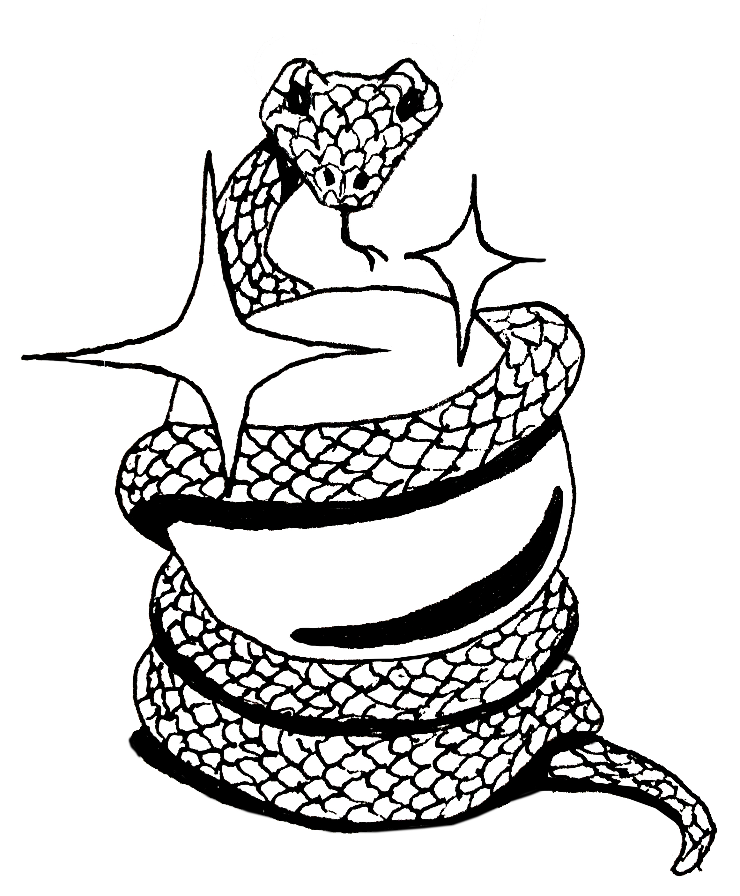
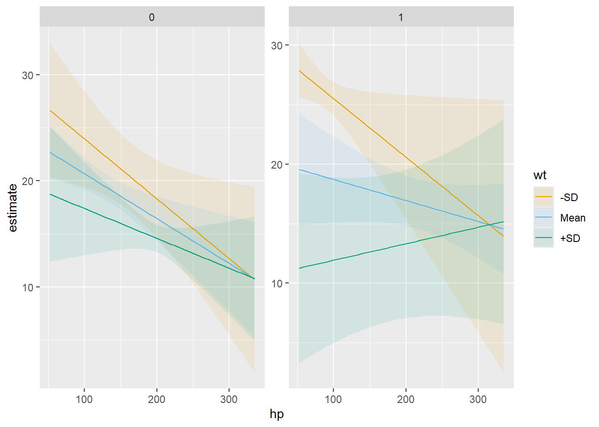
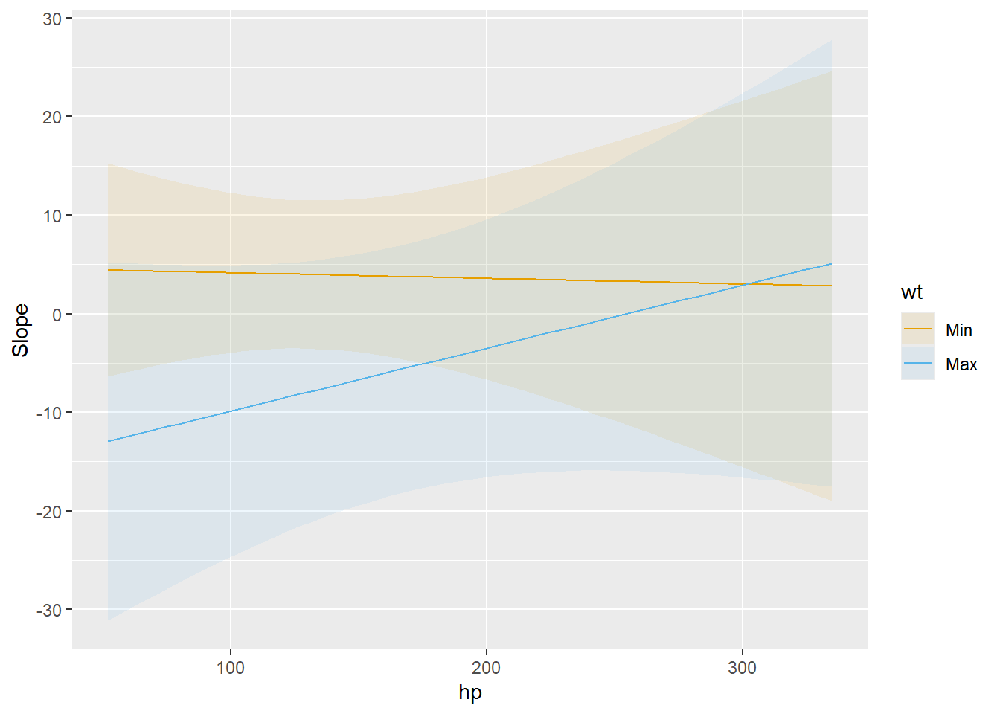

快速上手
Quick start · marginaleffects 官方文档中译
来源：Vincent Arel-Bundock，marginaleffects 官方文档 · Quick start （GitHub 仓库，源文件
website/bonus/get_started.qmd，revision870f15a0）。 网站内容 © 2025 Vincent Arel-Bundock, All Rights Reserved；marginaleffects软件代码依 GPL-3 许可。 本页为中文翻译，非原文，经原作者授权翻译并发布。 本页的 R 代码块由本站在渲染时真实执行；Python 代码块未在本站执行（本机 Quarto 未配置 Jupyter，reticulate 也未配置 Python），仅作静态展示，页面中不含由这些 Python 代码生成的输出。
本页介绍如何用 R 和 Python 的 marginaleffects 包来解读统计结果。我们提出的工作流建立在 5 个概念支柱之上：
- 量： 所关心的量是什么？我们想估计的是一个预测值，还是预测值的某个函数（平均、差、比、导数等）？
- 预测变量： 我们关心哪些自变量取值？我们想为数据集中的各个单元给出估计，还是为假想的或有代表性的个体给出估计？
- 聚合： 我们要报告网格中每一个观测的估计值，还是一个总体汇总？
- 不确定性： 我们如何量化估计值的不确定性？
- 检验： 我们要做哪些（非）线性假设检验或等价检验？
安装
开始之前，我们先安装 marginaleffects 包，它同时提供 R 版和 Python 版：
从 CRAN 安装：
install.packages("marginaleffects")从 PyPI 安装：
pip install marginaleffects或者，你也可以从 GitHub 安装 R 版的开发版：
library(remotes)
install_github("vincentarelbundock/marginaleffects/r")

量
marginaleffects 包让 R 用户能够计算和绘制三类主要的所关心的量：（1）预测值，（2）比较，（3）斜率。此外，本包还提供了一个便捷函数来计算第四类所关心的量——「边际均值」，它是平均预测值的一种特例。marginaleffects 还可以对所有这些量的个体层面（或「条件」）估计做平均（或称「边际化」），并对它们进行假设检验。
拟合好的模型在指定尺度上、针对预测变量某一组取值（例如它们的观测值、均值或因子水平）所预测出的结局。亦称拟合值、调整预测值。
predictions()、avg_predictions()、plot_predictions()。
比较模型在不同自变量取值下做出的预测（例如大学毕业生与其他人）：对比、差、相对风险、优势等。
comparisons()、avg_comparisons()、plot_comparisons()。
回归方程对所关心自变量的偏导数。亦称边际效应、趋势。
slopes()、avg_slopes()、plot_slopes()。
假设检验和等价检验既可以针对模型系数的线性或非线性函数进行，也可以针对
marginaleffects包所计算的任何量（预测值、斜率、比较、边际均值等）进行。不确定性估计可以通过 Delta 方法（用或不用稳健标准误）、自助法或模拟来获得。
预测值、比较和斜率本质上都是个体层面（或「条件」）的量。除了最简单的线性情形之外，估计值通常会随模型中所有自变量的取值而变化。因此数据集中的每一个观测都对应着它自己的预测值、比较和斜率估计。下面我们会看到，把个体层面的估计边际化（或「求平均」），从而报告「平均预测值」「平均比较」或「平均斜率」，往往是很有用的。
上面这些定义中有一处含糊之处：「边际」（marginal）这个词以两种不同、甚至相反的方式出现：
- 在「边际效应」中，我们指的是自变量发生一个微小（边际）变化对结局的效应。这是一个斜率，或者说导数。
- 在「边际均值」中，我们指的是在预测网格的各行上做边际化的过程。这是一个平均，或者说积分。
在本网站和本包中，我们把「边际效应」这个说法专门保留给「斜率」或「偏导数」之意。
marginaleffects 包提供了用于估计、平均、绘图和汇总上述所有估计目标的函数。marginaleffects 产生的对象是「tidy」的：它们生成「长」格式的简单数据框。这些对象还「符合标准」，可以与 summary()、head()、tidy()、glance() 等标准函数无缝配合，也可以与 modelsummary 等外部包或 ggplot2 一起使用。
现在我们运用 marginaleffects 的函数来计算上面描述的每一类所关心的量。首先，我们拟合一个带乘性交互的线性回归模型：
library(marginaleffects)
mod <- lm(mpg ~ hp * wt * am, data = mtcars)import polars as pl
import numpy as np
import statsmodels.formula.api as smf
from marginaleffects import *
mtcars = pl.read_csv("https://vincentarelbundock.github.io/Rdatasets/csv/datasets/mtcars.csv")
mod = smf.ols("mpg ~ hp * wt * am", data = mtcars).fit()然后，我们调用 predictions() 函数。如上所述，预测值是个体层面的估计，因此每个观测对应一个具体的预测值。默认情况下，predictions() 函数会为拟合原模型所用数据集中的每个观测各做一个预测。由于 mtcars 有 32 行，predictions() 的结果也有 32 行：
pre <- predictions(mod)
nrow(mtcars)[1] 32nrow(pre)[1] 32pre| Estimate | Std. Error | z | Pr(>|z|) | S | 2.5 % | 97.5 % |
|---|---|---|---|---|---|---|
| Type: response | ||||||
| 22.5 | 0.884 | 25.44 | <0.001 | 471.7 | 20.8 | 24.2 |
| 20.8 | 1.194 | 17.42 | <0.001 | 223.3 | 18.5 | 23.1 |
| 25.3 | 0.709 | 35.66 | <0.001 | 922.7 | 23.9 | 26.7 |
| 20.3 | 0.704 | 28.75 | <0.001 | 601.5 | 18.9 | 21.6 |
| 17.0 | 0.712 | 23.88 | <0.001 | 416.2 | 15.6 | 18.4 |
| 22 rows omitted | 22 rows omitted | 22 rows omitted | 22 rows omitted | 22 rows omitted | 22 rows omitted | 22 rows omitted |
| 29.6 | 1.874 | 15.80 | <0.001 | 184.3 | 25.9 | 33.3 |
| 15.9 | 1.311 | 12.13 | <0.001 | 110.0 | 13.3 | 18.5 |
| 19.4 | 1.145 | 16.95 | <0.001 | 211.6 | 17.2 | 21.7 |
| 14.8 | 2.017 | 7.33 | <0.001 | 42.0 | 10.8 | 18.7 |
| 21.5 | 1.072 | 20.02 | <0.001 | 293.8 | 19.4 | 23.6 |
pre = predictions(mod)
mtcars.shape
pre.shape
print(pre)接下来，我们用 comparisons() 函数计算：当每一个预测变量各增加 1 个单位时（每次只变动一个预测变量，其余保持不变），预测结局的差值。同样地，比较也是个体层面的量。由于模型中有 3 个预测变量、数据有 32 行，我们得到 96 个比较：
cmp <- comparisons(mod)
nrow(cmp)[1] 96cmp| Term | Contrast | Estimate | Std. Error | z | Pr(>|z|) | S | 2.5 % | 97.5 % |
|---|---|---|---|---|---|---|---|---|
| Type: response | ||||||||
| am | 1 - 0 | 0.325 | 1.68 | 0.193 | 0.8467 | 0.2 | -2.97 | 3.622 |
| am | 1 - 0 | -0.544 | 1.57 | -0.347 | 0.7287 | 0.5 | -3.62 | 2.530 |
| am | 1 - 0 | 1.201 | 2.35 | 0.511 | 0.6090 | 0.7 | -3.40 | 5.802 |
| am | 1 - 0 | -1.703 | 1.87 | -0.912 | 0.3618 | 1.5 | -5.36 | 1.957 |
| am | 1 - 0 | -0.615 | 1.68 | -0.366 | 0.7146 | 0.5 | -3.91 | 2.680 |
| 86 rows omitted | 86 rows omitted | 86 rows omitted | 86 rows omitted | 86 rows omitted | 86 rows omitted | 86 rows omitted | 86 rows omitted | 86 rows omitted |
| wt | +1 | -6.518 | 1.88 | -3.462 | <0.001 | 10.9 | -10.21 | -2.828 |
| wt | +1 | -1.653 | 3.74 | -0.442 | 0.6588 | 0.6 | -8.99 | 5.683 |
| wt | +1 | -4.520 | 2.47 | -1.830 | 0.0672 | 3.9 | -9.36 | 0.321 |
| wt | +1 | 0.635 | 4.89 | 0.130 | 0.8966 | 0.2 | -8.95 | 10.216 |
| wt | +1 | -6.647 | 1.86 | -3.572 | <0.001 | 11.5 | -10.29 | -2.999 |
cmp = comparisons(mod)
cmp.shape
print(cmp)comparisons() 函数支持自定义的查询。例如，当 hp 变量从 100 增加到 120 时，预测结局会发生什么变化？
comparisons(mod, variables = list(hp = c(120, 100)))| Estimate | Std. Error | z | Pr(>|z|) | S | 2.5 % | 97.5 % |
|---|---|---|---|---|---|---|
| Type: response | ||||||
| -0.738 | 0.370 | -1.995 | 0.04607 | 4.4 | -1.463 | -0.0129 |
| -0.574 | 0.313 | -1.836 | 0.06640 | 3.9 | -1.186 | 0.0388 |
| -0.931 | 0.452 | -2.062 | 0.03922 | 4.7 | -1.817 | -0.0460 |
| -0.845 | 0.266 | -3.182 | 0.00146 | 9.4 | -1.366 | -0.3248 |
| -0.780 | 0.268 | -2.909 | 0.00362 | 8.1 | -1.306 | -0.2547 |
| 22 rows omitted | 22 rows omitted | 22 rows omitted | 22 rows omitted | 22 rows omitted | 22 rows omitted | 22 rows omitted |
| -1.451 | 0.705 | -2.058 | 0.03958 | 4.7 | -2.834 | -0.0692 |
| -0.384 | 0.270 | -1.422 | 0.15498 | 2.7 | -0.912 | 0.1451 |
| -0.641 | 0.334 | -1.918 | 0.05513 | 4.2 | -1.297 | 0.0141 |
| -0.126 | 0.272 | -0.463 | 0.64360 | 0.6 | -0.659 | 0.4075 |
| -0.635 | 0.332 | -1.911 | 0.05598 | 4.2 | -1.286 | 0.0162 |
cmp = comparisons(mod, variables = {"hp": [120, 100]})
print(cmp)当 hp 变量在其均值附近增加 1 个标准差时，预测结局会发生什么变化？
comparisons(mod, variables = list(hp = "sd"))| Estimate | Std. Error | z | Pr(>|z|) | S | 2.5 % | 97.5 % |
|---|---|---|---|---|---|---|
| Type: response | ||||||
| -2.530 | 1.269 | -1.995 | 0.04607 | 4.4 | -5.02 | -0.0441 |
| -1.967 | 1.072 | -1.836 | 0.06640 | 3.9 | -4.07 | 0.1332 |
| -3.193 | 1.549 | -2.062 | 0.03922 | 4.7 | -6.23 | -0.1578 |
| -2.898 | 0.911 | -3.182 | 0.00146 | 9.4 | -4.68 | -1.1133 |
| -2.675 | 0.919 | -2.909 | 0.00362 | 8.1 | -4.48 | -0.8731 |
| 22 rows omitted | 22 rows omitted | 22 rows omitted | 22 rows omitted | 22 rows omitted | 22 rows omitted | 22 rows omitted |
| -4.976 | 2.418 | -2.058 | 0.03958 | 4.7 | -9.71 | -0.2373 |
| -1.315 | 0.925 | -1.422 | 0.15498 | 2.7 | -3.13 | 0.4974 |
| -2.199 | 1.147 | -1.918 | 0.05513 | 4.2 | -4.45 | 0.0483 |
| -0.432 | 0.933 | -0.463 | 0.64360 | 0.6 | -2.26 | 1.3970 |
| -2.177 | 1.139 | -1.911 | 0.05598 | 4.2 | -4.41 | 0.0556 |
cmp = comparisons(mod, variables = {"hp": "sd"})
print(cmp)comparisons() 函数还允许用户通过 comparison 参数指定预测值的任意函数。例如，马力增加 50 个单位之后，预测的每加仑英里数之比平均是多少？
comparisons(
mod,
variables = list(hp = 50),
comparison = "ratioavg")| Estimate | Std. Error | z | Pr(>|z|) | S | 2.5 % | 97.5 % |
|---|---|---|---|---|---|---|
| Type: response | ||||||
| 0.905 | 0.0319 | 28.4 | <0.001 | 586.8 | 0.843 | 0.968 |
cmp = comparisons(
mod,
variables = {"hp": 50},
comparison = "ratioavg")
print(cmp)详细解释和更多选项参见「比较」教程。
slopes() 函数让我们能够计算结局方程对每一个预测变量的偏导数。同样地，我们得到一个 96 行的数据框：
mfx <- slopes(mod)
nrow(mfx)[1] 96mfx| Term | Contrast | Estimate | Std. Error | z | Pr(>|z|) | S | 2.5 % | 97.5 % |
|---|---|---|---|---|---|---|---|---|
| Type: response | ||||||||
| am | 1 - 0 | 0.325 | 1.68 | 0.193 | 0.8467 | 0.2 | -2.97 | 3.622 |
| am | 1 - 0 | -0.544 | 1.57 | -0.347 | 0.7287 | 0.5 | -3.62 | 2.530 |
| am | 1 - 0 | 1.201 | 2.35 | 0.511 | 0.6090 | 0.7 | -3.40 | 5.802 |
| am | 1 - 0 | -1.703 | 1.87 | -0.912 | 0.3618 | 1.5 | -5.36 | 1.957 |
| am | 1 - 0 | -0.615 | 1.68 | -0.366 | 0.7146 | 0.5 | -3.91 | 2.680 |
| 86 rows omitted | 86 rows omitted | 86 rows omitted | 86 rows omitted | 86 rows omitted | 86 rows omitted | 86 rows omitted | 86 rows omitted | 86 rows omitted |
| wt | dY/dX | -6.518 | 1.88 | -3.462 | <0.001 | 10.9 | -10.21 | -2.828 |
| wt | dY/dX | -1.653 | 3.74 | -0.442 | 0.6588 | 0.6 | -8.99 | 5.682 |
| wt | dY/dX | -4.520 | 2.47 | -1.830 | 0.0673 | 3.9 | -9.36 | 0.322 |
| wt | dY/dX | 0.635 | 4.89 | 0.130 | 0.8966 | 0.2 | -8.94 | 10.215 |
| wt | dY/dX | -6.647 | 1.86 | -3.572 | <0.001 | 11.5 | -10.29 | -2.999 |
mfx = slopes(mod)
mfx.shape
print(mfx)预测变量
预测值、比较和斜率通常都是「条件」量，取决于模型中所有预测变量的取值。默认情况下，marginaleffects 的函数会针对数据的经验分布（也就是原始数据集的每一行）来估计所关心的量。不过，用户也可以用 newdata 参数指定自己想考察的预测变量取值。
newdata 接受数据框、快捷字符串，或者对 datagrid() 函数的调用。例如，要计算一辆所有预测变量都等于样本均值或中位数的假想汽车的预测结局，我们可以这样做：
predictions(mod, newdata = "mean")| Estimate | Std. Error | z | Pr(>|z|) | S | 2.5 % | 97.5 % |
|---|---|---|---|---|---|---|
| Type: response | ||||||
| 18.7 | 0.65 | 28.7 | <0.001 | 600.9 | 17.4 | 20 |
predictions(mod, newdata = "median")| Estimate | Std. Error | z | Pr(>|z|) | S | 2.5 % | 97.5 % |
|---|---|---|---|---|---|---|
| Type: response | ||||||
| 19.4 | 0.646 | 30 | <0.001 | 653.2 | 18.1 | 20.6 |
p = predictions(mod, newdata = "mean")
print(p)
p = predictions(mod, newdata = "median")
print(p)datagrid 函数为我们提供了一种强大的方式来定义预测变量网格。所有未在 datagrid() 中显式提到的变量，都会被固定在它们的均值或众数上：
predictions(
mod,
newdata = datagrid(
am = c(0, 1),
wt = range))| am | wt | Estimate | Std. Error | z | Pr(>|z|) | S | 2.5 % | 97.5 % |
|---|---|---|---|---|---|---|---|---|
| Type: response | ||||||||
| 0 | 1.51 | 23.24 | 2.70 | 8.60 | <0.001 | 56.9 | 17.95 | 28.5 |
| 0 | 5.42 | 12.79 | 2.97 | 4.31 | <0.001 | 15.9 | 6.98 | 18.6 |
| 1 | 1.51 | 27.13 | 2.86 | 9.48 | <0.001 | 68.4 | 21.52 | 32.7 |
| 1 | 5.42 | 5.92 | 5.82 | 1.02 | 0.309 | 1.7 | -5.48 | 17.3 |
p = predictions(
mod,
newdata = datagrid(
am = [0, 1],
wt = [mtcars["wt"].min(), mtcars["wt"].max()]))
print(p)同样的机制在 comparisons() 和 slopes() 中也可以使用。要在 am 分别等于 0 和 1、其他预测变量保持在各自均值上时，估计 mpg 对 wt 的偏导数：
slopes(
mod,
variables = "wt",
newdata = datagrid(am = 0:1))| am | Estimate | Std. Error | z | Pr(>|z|) | S | 2.5 % | 97.5 % |
|---|---|---|---|---|---|---|---|
| Type: response | |||||||
| 0 | -2.67 | 1.42 | -1.89 | 0.0590 | 4.1 | -5.45 | 0.102 |
| 1 | -5.42 | 2.16 | -2.52 | 0.0119 | 6.4 | -9.65 | -1.197 |
s = slopes(
mod,
variables = "wt",
newdata = datagrid(mod, am = [0, 1]))
print(s)我们还可以用三个强大的绘图函数，画出预测值、比较或斜率如何随预测变量的不同取值而变化：
plot_predictions：条件调整预测值plot_comparisons：条件比较plot_slopes：条件边际效应
例如，下面这幅图展示了我们的模型在 wt 和 am 变量不同取值下所预测的结局：
plot_predictions(mod, condition = list("hp", "wt" = "threenum", "am"))
cond = {
"hp": None,
"wt": [mtcars["wt"].mean() - mtcars["wt"].std(),
mtcars["wt"].mean(),
mtcars["wt"].mean() + mtcars["wt"].std()],
"am": None
}
plot_predictions(mod, condition = cond)下面这幅图展示了 mpg 对 am 的导数如何随 wt 和 hp 变化：
plot_slopes(mod, variables = "am", condition = list("hp", "wt" = "minmax"))
plot_slopes(mod,
variables = "am",
condition = {"hp": None, "wt": [mtcars["wt"].min(), mtcars["wt"].max()]}
)聚合
由于预测值、比较和斜率都是条件量，它们用起来可能有点笨重。很多时候，报告一个数字的汇总、而不是每个观测一个估计值，会更有用。有些方法学者建议：与其呈现「条件」估计，不如报告「边际」估计，也就是个体层面估计的平均。
（这里把「边际」用作「求平均」之意，不要与「边际效应」一词混淆——后者在计量经济学传统中对应的是偏导数，也就是一个「微小／边际」变化的效应。）
要把个体层面的估计边际化（求平均），我们可以使用 by 参数，或者使用便捷函数之一：avg_predictions()、avg_comparisons() 或 avg_slopes()。例如，下面这两条命令给出的结果是一样的：mtcars 数据集中的平均预测结局：
avg_predictions(mod)| Estimate | Std. Error | z | Pr(>|z|) | S | 2.5 % | 97.5 % |
|---|---|---|---|---|---|---|
| Type: response | ||||||
| 20.1 | 0.39 | 51.5 | <0.001 | Inf | 19.3 | 20.9 |
p = avg_predictions(mod)
print(p)这等价于按如下方式手动计算：
mean(predict(mod))[1] 20.09062np.mean(mod.predict())marginaleffects 的主要函数都包含一个 by 参数，可以让我们在数据的子组内进行边际化。例如，
avg_comparisons(mod, by = "am")| Term | Contrast | am | Estimate | Std. Error | z | Pr(>|z|) | S | 2.5 % | 97.5 % |
|---|---|---|---|---|---|---|---|---|---|
| Type: response | |||||||||
| am | 1 - 0 | 0 | -1.3830 | 2.5250 | -0.548 | 0.58388 | 0.8 | -6.3319 | 3.56589 |
| am | 1 - 0 | 1 | 1.9029 | 2.3086 | 0.824 | 0.40980 | 1.3 | -2.6219 | 6.42773 |
| hp | +1 | 0 | -0.0343 | 0.0159 | -2.160 | 0.03079 | 5.0 | -0.0654 | -0.00317 |
| hp | +1 | 1 | -0.0436 | 0.0213 | -2.050 | 0.04039 | 4.6 | -0.0854 | -0.00191 |
| wt | +1 | 0 | -2.4799 | 1.2316 | -2.014 | 0.04406 | 4.5 | -4.8939 | -0.06595 |
| wt | +1 | 1 | -6.0718 | 1.9762 | -3.072 | 0.00212 | 8.9 | -9.9451 | -2.19846 |
cmp = avg_comparisons(mod, by = "am")
print(cmp)边际均值（Marginal Means）是预测值的一种特殊情形，它是在分类预测变量的均衡网格上边际化（即求平均）得到的。为了说明这一点，我们来估计一个包含分类预测变量的新模型：
dat <- mtcars
dat$am <- as.logical(dat$am)
dat$cyl <- as.factor(dat$cyl)
mod_cat <- lm(mpg ~ am + cyl + hp, data = dat)dat = pl.read_csv("https://vincentarelbundock.github.io/Rdatasets/csv/datasets/mtcars.csv") \
.with_columns(pl.col("am").cast(pl.Boolean),
pl.col("cyl").cast(pl.Utf8))
mod_cat = smf.ols('mpg ~ am + cyl + hp', data=dat.to_pandas()).fit()我们可以使用前面介绍过的函数手动计算边际均值：
avg_predictions(
mod_cat,
newdata = "balanced",
by = "am")| am | Estimate | Std. Error | z | Pr(>|z|) | S | 2.5 % | 97.5 % |
|---|---|---|---|---|---|---|---|
| Type: response | |||||||
| FALSE | 18.3 | 0.787 | 23.2 | <0.001 | 394.7 | 16.8 | 19.8 |
| TRUE | 22.5 | 0.833 | 27.0 | <0.001 | 529.2 | 20.8 | 24.1 |
predictions(
mod_cat,
newdata = datagrid(grid_type = "balanced"),
by = "am")
print(p)不确定性
marginaleffects 包会为它计算的所有量——预测值、比较、斜率等——报告不确定性估计。默认情况下，标准误是使用Delta 方法和经典标准误来计算的。这些标准误计算速度快，并且在某些（但非全部）情况下具有令人满意的性质。marginaleffects 支持多种替代方案，包括 Huber-White 异方差稳健、聚类稳健、自助法以及基于模拟的不确定性估计。
标准误教程提供了更多细节。现在，展示两个例子就足够了。首先，我们使用 vcov 参数来报告“HC3”（异方差一致）标准误。
avg_predictions(mod, by = "am", vcov = "HC3")| am | Estimate | Std. Error | z | Pr(>|z|) | S | 2.5 % | 97.5 % |
|---|---|---|---|---|---|---|---|
| Type: response | |||||||
| 0 | 17.1 | 0.614 | 27.9 | <0.001 | 568.5 | 15.9 | 18.3 |
| 1 | 24.4 | 0.782 | 31.2 | <0.001 | 707.3 | 22.9 | 25.9 |
暂不支持。
其次，我们使用 inferences() 函数，通过 500 次重抽样来计算自助法区间：
avg_predictions(mod, by = "am") |>
inferences(method = "boot", R = 500)| am | Estimate | 2.5 % | 97.5 % |
|---|---|---|---|
| Type: response | |||
| 0 | 17.1 | 16.3 | 18.4 |
| 1 | 24.4 | 21.3 | 26.6 |
暂不支持。
检验
hypotheses() 函数和 hypothesis 参数可以用来对模型系数，或者对上文介绍的函数所计算出的任何量，进行线性和非线性假设检验。
考虑下面这个模型：
mod <- lm(mpg ~ qsec * drat, data = mtcars)
coef(mod)(Intercept) qsec drat qsec:drat
12.3371987 -1.0241183 -3.4371461 0.5973153 mod = smf.ols('mpg ~ qsec * drat', data=mtcars).fit()
print(mod.params)我们能否拒绝这样的原假设：drat 系数的大小是 qsec 系数的 2 倍？
hypotheses(mod, "drat = 2 * qsec")| Hypothesis | Estimate | Std. Error | z | Pr(>|z|) | S | 2.5 % | 97.5 % |
|---|---|---|---|---|---|---|---|
| drat=2*qsec | -1.39 | 10.8 | -0.129 | 0.897 | 0.2 | -22.5 | 19.7 |
h = hypotheses(mod, "drat = 2 * qsec")
print(h)我们可以提出同样的问题，但改用 b1、b2、b3 等索引按位置引用参数：
hypotheses(mod, "b3 = 2 * b2")Warning:
It is essential to check the order of estimates when specifying hypothesis tests using positional indices like b1, b2, etc. The indices of estimates can change depending on the order of rows in the original dataset, user-supplied arguments, model-fitting package, and version of `marginaleffects`.
It is also good practice to use assertions that ensure the order of estimates is consistent across different runs of the same code. Example:
```r
mod <- lm(mpg ~ am * carb, data = mtcars)
# assertion for safety
p <- avg_predictions(mod, by = 'carb')
stopifnot(p$carb[1] == 1, p$carb[2] == 2)
# hypothesis test
avg_predictions(mod, by = 'carb', hypothesis = 'b1 - b2 = 0')
```
Disable this warning with: `options(marginaleffects_safe = FALSE)`
This warning appears once per session.| Hypothesis | Estimate | Std. Error | z | Pr(>|z|) | S | 2.5 % | 97.5 % |
|---|---|---|---|---|---|---|---|
| b3=2*b2 | -1.39 | 10.8 | -0.129 | 0.897 | 0.2 | -22.5 | 19.7 |
h = hypotheses(mod, "b2 = 2 * b1")
print(h)marginaleffects 中的主要函数都有一个 hypothesis 参数，这意味着我们可以进行复杂的模型检验。例如，考虑两个斜率估计值：
slopes(
mod,
variables = "drat",
newdata = datagrid(qsec = range))| qsec | Estimate | Std. Error | z | Pr(>|z|) | S | 2.5 % | 97.5 % |
|---|---|---|---|---|---|---|---|
| Type: response | |||||||
| 14.5 | 5.22 | 3.79 | 1.38 | 0.1682 | 2.6 | -2.206 | 12.7 |
| 22.9 | 10.24 | 5.17 | 1.98 | 0.0475 | 4.4 | 0.112 | 20.4 |
s = slopes(
mod,
variables = "drat",
newdata = datagrid(qsec = [mtcars["qsec"].min(), mtcars["qsec"].max()]))
print(s)这两个斜率彼此之间是否有显著差异？要检验这一点，我们可以使用 hypothesis 参数：
slopes(
mod,
hypothesis = "b1 = b2",
variables = "drat",
newdata = datagrid(qsec = range))| Hypothesis | Estimate | Std. Error | z | Pr(>|z|) | S | 2.5 % | 97.5 % |
|---|---|---|---|---|---|---|---|
| Type: response | |||||||
| b1=b2 | -5.02 | 8.53 | -0.589 | 0.556 | 0.8 | -21.7 | 11.7 |
s = slopes(
mod,
hypothesis = "b0 = b1",
variables = "drat",
newdata = datagrid(qsec = [mtcars["qsec"].min(), mtcars["qsec"].max()]))
print(s)另外，我们也可以用词项名称来引用取值（当名称是唯一的时候）：
avg_slopes(mod)| Term | Estimate | Std. Error | z | Pr(>|z|) | S | 2.5 % | 97.5 % |
|---|---|---|---|---|---|---|---|
| Type: response | |||||||
| drat | 7.22 | 1.366 | 5.29 | < 0.001 | 23.0 | 4.548 | 9.90 |
| qsec | 1.12 | 0.433 | 2.60 | 0.00943 | 6.7 | 0.275 | 1.97 |
avg_slopes(mod, hypothesis = "drat = qsec")| Hypothesis | Estimate | Std. Error | z | Pr(>|z|) | S | 2.5 % | 97.5 % |
|---|---|---|---|---|---|---|---|
| Type: response | |||||||
| drat=qsec | 6.1 | 1.45 | 4.2 | <0.001 | 15.2 | 3.25 | 8.95 |
s = avg_slopes(mod)
print(s)
s = avg_slopes(mod, hypothesis = "drat = qsec")
print(s)现在，假设出于理论（或实质性，或临床）方面的原因，我们只关心大于 2 的斜率。这时我们可以使用 equivalence 参数来进行等价检验：
avg_slopes(mod, equivalence = c(-2, 2))| Term | Estimate | Std. Error | z | Pr(>|z|) | S | 2.5 % | 97.5 % | p (NonSup) | p (Equiv) |
|---|---|---|---|---|---|---|---|---|---|
| Type: response | |||||||||
| drat | 7.22 | 1.366 | 5.29 | < 0.001 | 23.0 | 4.548 | 9.90 | 0.9999 | 0.9999 |
| qsec | 1.12 | 0.433 | 2.60 | 0.00943 | 6.7 | 0.275 | 1.97 | 0.0216 | 0.0216 |
s = avg_slopes(mod, equivalence = [-2., 2.])
print(s)关于背景、细节，以及如何在更复杂的情形下进行假设检验，请参阅假设检验与自定义对比教程。